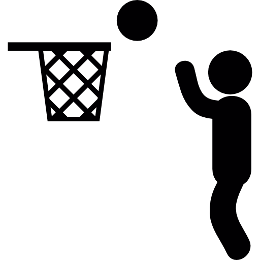

BASKETBALL
BASKETBALLaqui pon tu articulo
Michael Jordan
EL MEJOR JUGADOR DE TODOS LOS TIEMPOSMichael Jeffrey Jordan es un exjugador de baloncesto estadounidense. Con 1,98 metros de altura, jugaba en la posición de escolta. Es considerado por la mayoría de aficionados y especialistas como el mejor jugador de baloncesto de todos los tiempos.

el video fue subido por un youtuber el 13 de mayo del 2021
 Sitios oficiales